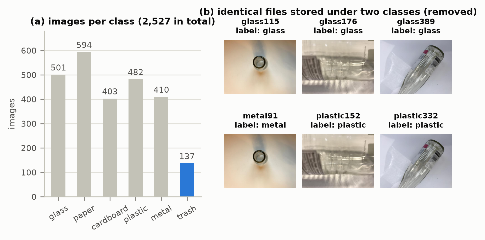
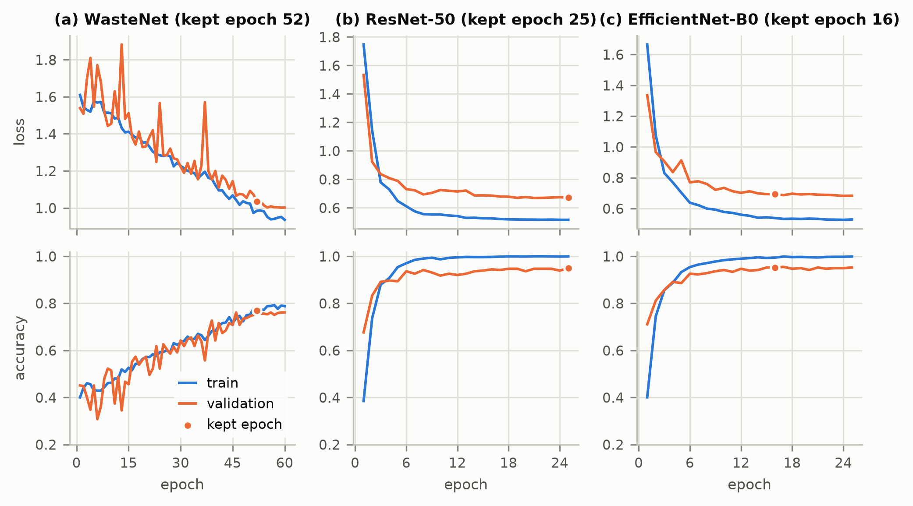
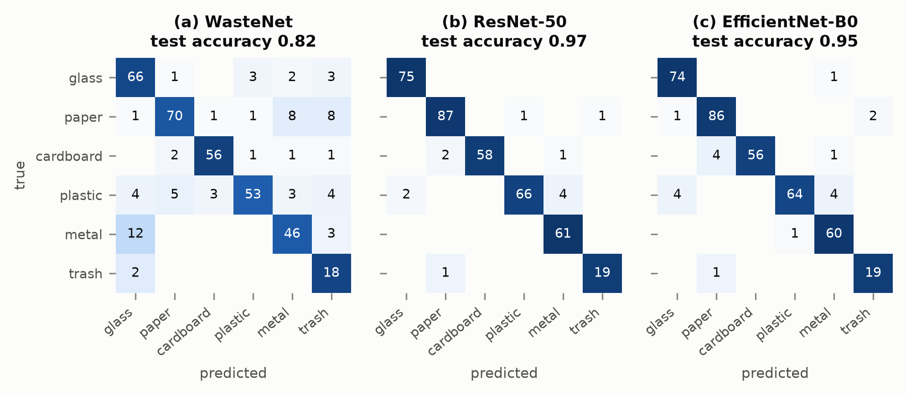
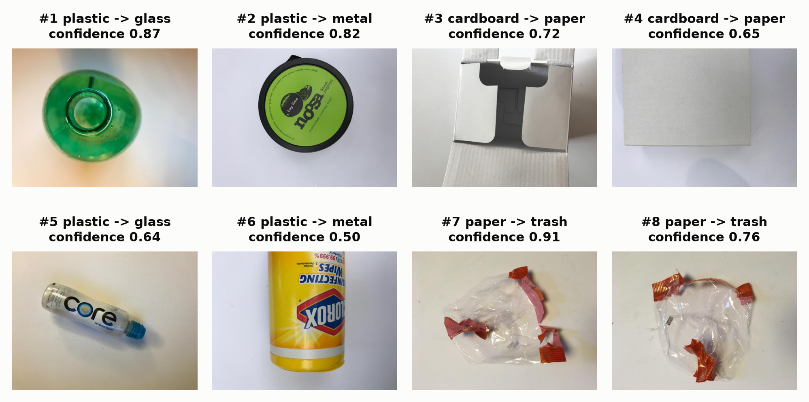
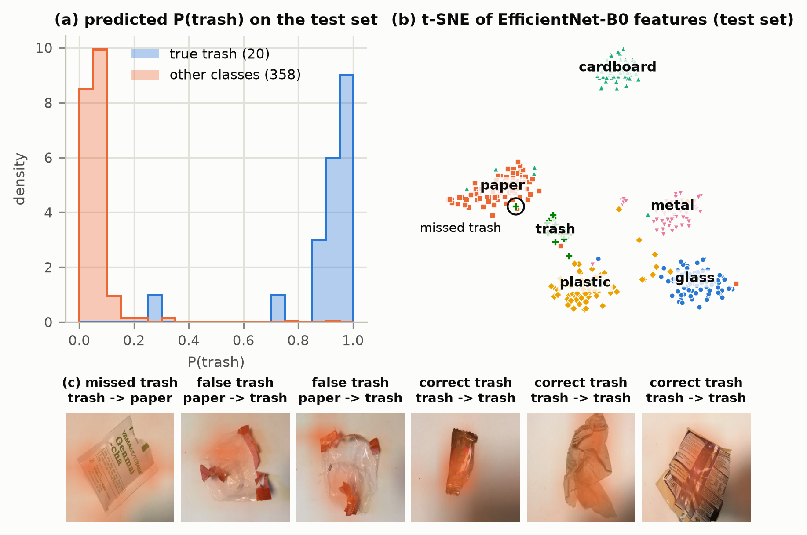

Smart bins and material-recovery facilities (MRFs) must sort dry waste without manual handling; every mis-sorted item loses recyclable material or contaminates a recycling bale. The task is to classify a photo of a single waste item as glass, paper, cardboard, plastic, metal or trash. Trash is only 5.4 % of the images (a model that never predicted it would still be ~95 % accurate), so success is judged by test macro-F1 (unweighted mean of the class F1 scores) and per-class recall and F1, especially for trash, with accuracy, Cohen’s κ and 95 % bootstrap confidence intervals (CIs) alongside.
Source. TrashNet [1], dataset-resized (github.com/garythung/trashnet): all 2,527 RGB photos (512×384) of single items on a white board; imbalance 4.3 : 1 between paper (594) and trash (137) (Fig. 1a). Audit (dataset risks): (i) MD5 hashing found 3 byte-identical photos stored under two different classes (Fig. 1b); one photo cannot be two materials, so all 6 copies were removed, leaving 2,521 images. (ii) 19 near-duplicate pairs (same object shot twice, thumbnail cosine ≥ 0.98) were grouped and each group kept inside one split, so no test image has an almost-copy in training.
Split. Stratified, group-aware 70 / 15 / 15 split, seed 42, saved in results/split.csv (Table 1); the trash share is 5.3–5.6 % in every split. Validation data is used for model selection and early stopping; the test set is used once. Pre-processing: resize to 224×224 (the whole object stays visible), ImageNet mean/std normalisation. Augmentation (training only): rotation ±20°, random resized crop (60–100 % area), horizontal and vertical flips, mild colour jitter (hue ±0.02, as colour is a real material cue).
Class imbalance. Each class is weighted in the loss by wc = N / (K·nc) (Table 1), so a missed trash item costs about 4× more than a missed paper item. This was preferred to oversampling, which would repeat the same 96 trash photos several times per epoch and invite memorisation. Label smoothing (0.1), macro-F1 model selection and an ablation without the weights complete the strategy.
Table 1. Images per class and split after the audit, and the class weights used in the loss.
| glass | paper | cardboard | plastic | metal | trash | total | |
|---|---|---|---|---|---|---|---|
| Original dataset | 501 | 594 | 403 | 482 | 410 | 137 | 2,527 |
| Train | 348 | 417 | 282 | 336 | 287 | 96 | 1,766 |
| Validation | 75 | 88 | 60 | 72 | 61 | 21 | 377 |
| Test | 75 | 89 | 61 | 72 | 61 | 20 | 378 |
| Loss weight wc | 0.85 | 0.71 | 1.04 | 0.88 | 1.03 | 3.07 | – |

Why three models. Comparing a CNN trained from scratch with two pre-trained backbones answers two questions: how much does ImageNet pre-training help on 1.8 k images, and does a small, fast network lose accuracy against a large one (relevant for an embedded smart-bin controller).
For (B) and (C) the ImageNet head was replaced by dropout 0.3 + linear(6) and all layers were fine-tuned (none frozen), the head with a 10× higher learning rate. Training: class-weighted cross-entropy with label smoothing 0.1, AdamW, one-cycle learning rate (15 % warm-up, cosine decay), batch 32, bfloat16 on an RTX 4050; the weights with the best validation macro-F1 are kept, with early stopping (Table 2). Ablation: the better pre-trained model retrained with an unweighted loss. Reproducibility: seed 42, deterministic cuDNN, saved split, versions printed (Python 3.14.4, PyTorch 2.14.1).
Table 2. Hyper-parameters (input 224×224 and batch size 32 for all models).
| Model | Initialisation | Trainable layers | Peak LR (backbone / head) | Weight decay | Max epochs | Early-stop patience |
|---|---|---|---|---|---|---|
| A. WasteNet | random | all | 3e-3 | 0.05 | 60 | 15 |
| B. ResNet-50 | ImageNet | all | 2e-4 / 2e-3 | 0.01 | 25 | 10 |
| C. EfficientNet-B0 | ImageNet | all | 5e-4 / 3e-3 | 0.01 | 25 | 10 |
All numbers below are from the held-out test set (378 images, 20 trash), each model evaluated once with its best-validation weights. The final model was chosen on validation macro-F1: EfficientNet-B0 0.95, ResNet-50 0.94, WasteNet 0.75.
Table 3. Overall test metrics (95 % bootstrap CI over 2,000 resamples of the test set).
| Model | Accuracy | Balanced acc. | Macro-P | Macro-F1 [95% CI] | Weighted F1 | Cohen’s κ | Top-2 acc. |
|---|---|---|---|---|---|---|---|
| A. WasteNet (scratch) | 0.82 | 0.83 | 0.80 | 0.80 [0.75, 0.84] | 0.82 | 0.78 | 0.93 |
| B. ResNet-50 | 0.97 | 0.97 | 0.97 | 0.97 [0.94, 0.98] | 0.97 | 0.96 | 0.98 |
| C. EfficientNet-B0 (selected) | 0.95 | 0.95 | 0.95 | 0.95 [0.92, 0.97] | 0.95 | 0.94 | 0.97 |
| C, unweighted loss (ablation) | 0.96 | 0.95 | 0.96 | 0.95 [0.93, 0.98] | 0.96 | 0.94 | 0.98 |
Table 4. Trash-class test results, model size, latency (one image) and training time.
| Model | Trash P | Trash R | Trash F1 [95% CI] | Params | Weights | GPU ms | CPU ms (4 thr.) | Train time |
|---|---|---|---|---|---|---|---|---|
| A. WasteNet | 0.49 | 0.90 | 0.63 [0.47, 0.77] | 3.39 M | 13.6 MB | 1.5 | 38.9 | 5.8 min |
| B. ResNet-50 | 0.95 | 0.95 | 0.95 [0.86, 1.00] | 23.52 M | 94.4 MB | 3.2 | 45.8 | 3.6 min |
| C. EfficientNet-B0 | 0.90 | 0.95 | 0.93 [0.83, 1.00] | 4.02 M | 16.4 MB | 6.4 | 18.5 | 3.0 min |
| C, unweighted loss | 0.95 | 0.95 | 0.95 [0.86, 1.00] | 4.02 M | 16.4 MB | as C | as C | 2.7 min |
Table 5. Per-class test results of the selected model, EfficientNet-B0.
| Class | glass | paper | cardboard | plastic | metal | trash | macro avg |
|---|---|---|---|---|---|---|---|
| Precision | 0.94 | 0.95 | 1.00 | 0.98 | 0.91 | 0.90 | 0.95 |
| Recall | 0.99 | 0.97 | 0.92 | 0.89 | 0.98 | 0.95 | 0.95 |
| F1 | 0.96 | 0.96 | 0.96 | 0.93 | 0.94 | 0.93 | 0.95 |
| F1 95% CI | [0.93, 0.99] | [0.92, 0.98] | [0.91, 0.99] | [0.89, 0.97] | [0.90, 0.98] | [0.83, 1.00] | [0.92, 0.97] |
| Support (images) | 75 | 89 | 61 | 72 | 61 | 20 | 378 |


Transfer learning is decisive: pre-training raises test macro-F1 from 0.80 to 0.95–0.97 and trash F1 from 0.63 to 0.93–0.95. ResNet-50 scored slightly higher on test, but switching after seeing test scores would misuse the test set, the CIs overlap, and EfficientNet-B0 is 6× smaller and 2.5× faster on CPU. Fitting (Fig. 2): WasteNet’s curves stay together and still rise (0.79 vs. 0.76 accuracy at epoch 60): it under-fits, as 1.8 k images are too few to learn features from scratch. The pre-trained models reach ~1.00 training vs. 0.95 validation accuracy with a flat validation loss: mild over-fitting, contained by augmentation, dropout, weight decay, label smoothing and best-epoch selection.
EfficientNet-B0 misclassifies 19 of 378 test images. Plastic is the hardest class (recall 0.89; 4 → glass, 4 → metal), then cardboard (0.92; 4 → paper) (Fig. 3c); the scratch CNN also confuses metal with glass (12) and over-predicts trash. Table 6 explains the errors of Fig. 4: mostly material look-alikes that an RGB photo cannot resolve (industrial sorters add near-infrared sensing for this).
Table 6. Likely reason for each misclassified image in Fig. 4.
| # | True → predicted | Likely reason |
|---|---|---|
| 1 | plastic → glass | Green PET bottle from the top: same neck, colour and gloss as a glass bottle |
| 2 | plastic → metal | Round yoghurt lid with a dark rim, top-down: looks like a can lid |
| 3 | cardboard → paper | White paperboard carton; training cardboard is mostly brown and corrugated |
| 4 | cardboard → paper | Flat grey sheet filling the frame, no edge or corrugation visible (confidence 0.65) |
| 5 | plastic → glass | Transparent bottle; transparency and reflections are the strongest glass cues |
| 6 | plastic → metal | Cylindrical wipes canister looks like a can; model unsure (confidence 0.50) |
| 7, 8 | paper → trash | Clear plastic bag labelled paper in TrashNet: label noise, “trash” is reasonable |

The selected model finds 19 of 20 trash items (recall 0.95) with 2 false alarms (precision 0.90); only 3 of its 19 errors involve trash (Fig. 5). Missed: a printed tea sachet predicted as paper (P(trash) = 0.29); it looks like paper and is trash only because laminate is not recyclable. It lies inside the paper cluster of the t-SNE and its Grad-CAM [4] is diffuse. False alarms: the mislabelled plastic bag (#7–8); Grad-CAM points at the film. Correct trash: Grad-CAM highlights the wrapper itself, not the background. P(trash) is above 0.85 for most trash and below 0.1 for most other items (Fig. 5a), and trash forms its own cluster between paper and plastic, the classes it is confused with.
Root causes: trash is defined by recyclability, not material (many trash items are paper or plastic); it is the smallest, most varied class (96 training images); neighbouring classes contain label noise; and with 20 test images one image moves trash recall by 5 points (trash-F1 CI 0.83–1.00).

Per-class reporting, macro-F1 selection and a class-weighted loss were used. The ablation (Tables 3–4) shows that for the pre-trained network the weights make no measurable difference: without them trash recall was the same (0.95), trash F1 0.95 vs. 0.93 (one false alarm fewer), validation macro-F1 0.94 vs. 0.95: 1–3 images, inside the CIs, because pre-trained features already isolate trash (Fig. 5b). For the weak scratch features the weights pushed the boundary towards trash (recall 0.90, precision 0.49).
Use: a camera-equipped smart bin or MRF pre-sorter; EfficientNet-B0 (4.0 M parameters, 16 MB, 18.5 ms per image on 4 CPU threads) fits a single-board computer. Not deployable yet: TrashNet shows one clean item on a white board, whereas real waste is dirty, cluttered and seen by other cameras; mostly US packaging may not represent Indian waste (bias); 20 trash test images give wide CIs. Safety: errors lose recyclables or contaminate bales; wrong predictions are less confident (0.59 vs. 0.87), so low-confidence items should go to manual sorting. Privacy: bin cameras may capture people, so images should be processed on-device and not stored.
A fine-tuned EfficientNet-B0 classifies single waste items with test accuracy 0.95, macro-F1 0.95 and trash recall 0.95, far above a CNN trained from scratch (macro-F1 0.80), and is small enough for a smart bin. Next: fine-tune on photos from a real bin (clutter, several items), add a confidence-based reject option, ensemble ResNet-50 with EfficientNet-B0, and quantise to 8-bit.
[1] G. Thung, M. Yang, “Classification of Trash for Recyclability Status,” CS229 report, Stanford, 2016 (github.com/garythung/trashnet). [2] K. He et al., “Deep Residual Learning for Image Recognition,” CVPR 2016. [3] M. Tan, Q. V. Le, “EfficientNet: Rethinking Model Scaling for CNNs,” ICML 2019. [4] R. R. Selvaraju et al., “Grad-CAM,” ICCV 2017. [5] L. van der Maaten, G. Hinton, “Visualizing Data using t-SNE,” JMLR 2008.
AI-assistance declaration: an AI assistant (Claude, Anthropic) helped with the code and the wording of this report; all numbers come from the executed notebook in the GitHub repository; pre-trained weights are from torchvision.